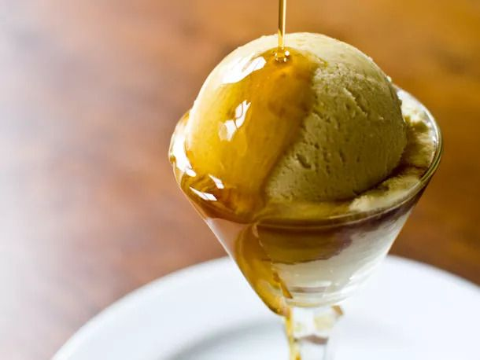

Maple Ice Cream

Description
Rich and smooth, made with dark robust maple syrup
Ingredients
Yield: 1 qt
- Egg yolks – about 6 (3/8 cup / 3 oz)
- Maple syrup, dark robust – 3/4 cup (6 oz)
- Powdered milk – 1/4 cup (23 g)
- Kosher salt – 1 tsp
- Heavy cream – 1 1/2 cups (12 oz)
- Whole milk – 1 cup (8 oz)
- Ice
- Cold water
Directions
- In a small saucepan, combine egg yolks, maple syrup, powdered milk, and salt, stirring with a whisk.
- Add cream and milk to the saucepan, stirring with a whisk.
- Heat the mixture over medium heat, whisking frequently, until it reaches 170°.
- Strain the mixture into an airtight container.
- In a large bowl, combine ice and cold water. Place the ice cream base in the ice-water bath. Chill the bowl (with the ice cream base and ice-water bath) in the refrigerator for at least 8 hours.
- Churn the ice cream in an ice cream maker according to the machine's instructions.
- Transfer the ice cream into an airtight container. Chill in the freezer for at least 4 hours.